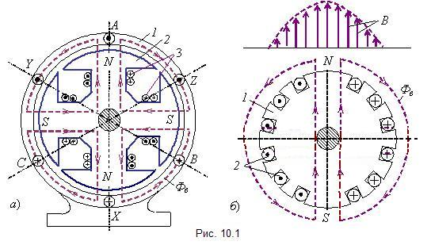

|
Синхронные машины
- это машины переменного тока, у которых частота вращения ротора
равна частоте вращения магнитного поля, создаваемого магнитодвижущей
силой обмотки статора. Синхронные машины, как и все электрические
машины, обратимы, т. е. они могут работать как в режиме генератора,
так и в режиме двигателя.
Напомним, что основная часть электрической энергии,
производимой и используемой на Земле, вырабатывается с помощью синхронных
трёхфазных турбогенераторов и гидрогенераторов, приводимых во вращение
соответственно паровыми и гидротурбинами. Частота напряжения (тока),
вырабатываемого синхронными генераторами, f1
= pn2/60,
где n2
- частота вращения ротора; p - число пар полюсов магнитного поля
статора.
Гидрогенераторы обычно имеют
явнополюсное исполнение ротора (частота
вращения n2
≤ 1500 об/мин, соответственно число пар полюсов p
≥ 2 при f1 = 50 Гц) (рис. 10.1, а),
а турбогенераторы - неявнополюсное (n2 = 3000 об/мин. при p = 1 и f1
= 50 Гц)) (рис. 10.1, б). Синхронные
генераторы - самые мощные электрические машины. Единичная мощность
гидрогенераторов, устанавливаемых на гидростанциях, достигла 640
МВт, а турбогенераторов, устанавливаемых на тепловых электростанциях
- 800…1200 МВт; диапазон напряжений от 230 В до 36,75 кВ.
 Синхронные
двигатели широко применяют, как правило,
в электроприводах механизмов большой мощности (большие компрессоры,
насосы, воздуходувки, угольные мельницы и т. д.) с нерегулируемой
частотой вращения. Синхронные двигатели выпускаются в диапазоне
мощностей от 132 до 30000 кВт с частотой вращения от 250 до 3000
об/мин на напряжение 6 и 10 кВ, 50 Гц. Частота вращения ротора равна
частоте вращения магнитного поля статора:
| n2
= n1= n0
= 60f1/p.
| (10.1)
|
Основное преимущество синхронных двигателей
по сравнению с асинхронными заключается в том, что они, работая
с механической нагрузкой Р2 (имея момент сопротивления Мс на валу),
позволяют в широких пределах изменять реактивный ток и реактивную
мощность, начиная с режима потребления из сети индуктивной мощности
и заканчивая режимом генерирования ёмкостной реактивной мощности
в сеть. Такие режимы работы синхронного двигателя достигаются за
счёт изменения тока возбуждения: при перевозбуждении машины токи
в обмотке статора опережают по фазе подведенные к двигателю соответствующие
фазные напряжения.
Синхронные машины, не несущие механической нагрузки
на валу, предназначенные для генерирования реактивной мощности и
улучшения коэффициента мощности cosω сети, называются синхронными
компенсаторами. Как правило, это крупные
машины (мощностью 16…160 МВ·А).
Наряду с мощными машинами выпускаются синхронные генераторы и двигатели
значительно меньших номинальных мощностей, вплоть до долей ватта.
Синхронные генераторы мощностью до десятков и сотен киловатт используют
как автономные источники питания с приводом от двигателей внутреннего
сгорания. Строгое постоянство частоты вращения обусловливает широкое
применение синхронных микродвигателей в регистрирующих приборах,
в системах звуко- и видеозаписи.
|